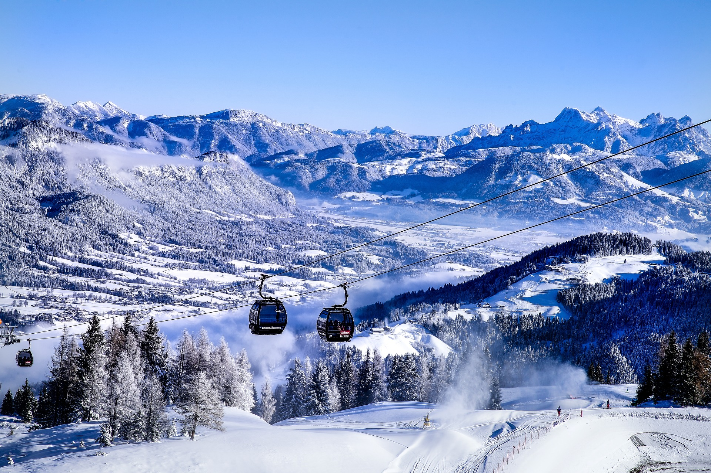

Österreich
Flagge

Bundesländer
Oberösterreich
Oberösterreich (OÖ)
Hauptstadt: Linz
Einwohner: 1.495.608
Fläche: 11.982,52km²
Landesfarben: weiß-rot
Landeshauptmann: Thomas Stelzer
Niederösterreich
Niederösterreich (NÖ)
Hauptstadt: St. Pölten
Einwohner: 1.690.879
Fläche: 19.179,56 km²
Landesfarben: blau-gelb
Landeshauptmann: Johanna Mikl-Leitner
Wien

Wien (W)
Hauptstadt: Wien
Einwohner: 1.920.949
Fläche: 414,87 km²
Landesfarben: rot-weiß
Landeshauptmann: Michael Ludwig
Burgenland
Burgenland (B)
Hauptstadt: Eisenstadt
Einwohner: 296.010
Fläche: 3.965,20 km²
Landesfarben: rot-gold
Landeshauptmann: Hans Peter Doskozil
Steiermark
Steiermark (ST)
Hauptstadt: Graz
Einwohner: 1.247.077
Fläche: 16.399,34 km²
Landesfarben: weiß-grün
Landeshauptmann: Herrmann Schützenhofer
Kärnten
Kärnten (K)
Hauptstadt: Klagenfurt
Einwohner: 562.089
Fläche: 9.536,50 km²
Landesfarben: gelb-rot-weiß
Landeshauptmann: Peter Kaiser
Salzburg
Salzburg (S)
Hauptstadt: Salzburg
Einwohner: 560.710
Fläche: 7.154,56 km²
Landesfarben: rot-weiß
Landeshauptmann: Wilfried Haslauer
Tirol
Tirol (T)
Hauptstadt: Innsbruck
Einwohner: 1.813.400
Fläche: 26.674 km²
Landesfarben: weiß-rot
Landeshauptmann: Günther Platter
Vorarlberg
Vorarlberg (V)
Hauptstadt: Bregenz
Einwohner: 401.607
Fläche: 2.601,67 km²
Landesfarben: rot-weiß
Landeshauptmann: Markus Wallner